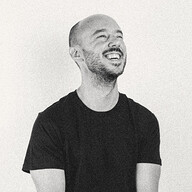

Hey there, I'm gui, not G.U.I., or guy, or Guy, or any other nonsense, just gui, as in Guillaume (ghee-yom), right? I'm watching you.
One of the few Bordeaux folks actually coming from the Bordeaux area. I do Front, previously in Care, and now in Customer Journey, as (acting) Staff Engineer.
Bisous

I've joined BM as an external creative developer in February 2024.
I love creating experiences with storytelling, elegant UI animations, and immersive 3D using WebGL.
Since 2018, I have been freelancing as a front-end and creative developer, collaborating with agencies and studios like Immersive Garden, Razorfish, Uzik… My portfolio includes projects for clients such as Cartier, Renault, and Jean Paul Gaultier, among others.
In my daily work, I enjoy achieving 60 fps, keeping things simple, and adding a touch of humor.
Outside of work, you will probably find me riding my bike with an analog camera, enjoying or trying to create some art with new technologies, or watching NBA games.